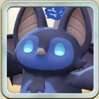

幻霊のモンスター
幻霊のモンスター
幻霊の血統から探す
アイコンから血統ごとの技一覧へ移動できます。


幻霊のデータ
血統ごとの体数と技
| 血統 | 体数 | 共通技 | 専用技 | 技一覧 |
|---|---|---|---|---|
| モッチー | 12体 | 17技 | 7技 | モッチー種の技一覧 |
| ゲル | 14体 | 15技 | 8技 | ゲル種の技一覧 |
| ウンディーネ | 10体 | 17技 | 13技 | ウンディーネ種の技一覧 |
| プラント | 12体 | 14技 | 4技 | プラント種の技一覧 |
| シンリュウ | 8体 | 15技 | 13技 | シンリュウ種の技一覧 |
| アーク | 7体 | 17技 | 3技 | アーク種の技一覧 |
オーラ別の体数
最近追加されたモンスター
運営者のひとこと
最終更新：
おすすめ血統
アーク種
実装当初は圧倒的な技スペックで、半年後には俺は喰らう者だの実装で、その翌々月には師匠カードルーカスがもたらした圧倒的防御性能で常に最前線にいるLINEモンスターファームオリジナル血統。純血アークとノーブル種の転スラコラボモンスター、ディアブロが双璧。
ウンディーネ種
幻霊のなかではアーク種が頭ひとつ抜けているものの、技発動のみで相手の技の消費ガッツを増やす能力など妨害性能が高く強力。青技が多く青オーラ技のみを強化する能力を活かしやすいのもポイント。
幻霊のアシストカード
師匠カード
モン類MR
血統別モンスター
ゲル（14体）


モッチー（12体）

・圧倒的ビジュアルで世間を騒がせた甲羅を背負ったカエル ・モッチー×カワズモー ・ランク5登録技は弱くはないが微妙 ・オリジナル技もランク2技のみでちょっとさみしい ・ただオリジナル技は結構優秀

・2025年9月の2.5周年のモングライベント報酬モンスター。ライモンオリジナルのレアモンモッチー種。 ・本来のモッチー種の柔らかそうなイメージに反して、宝石のサファイアのように鮮やかで丈夫そうな外皮を持つ。

・2025年6月のお楽しみガチャにて登場したモッチー種レアモン。 ・原作MF2ではアルバイトモードでハイスコアを出すと貰える合体アイテム「DNAカプセル」を用いて初めてゲットできるレアなモンスター。


プラント（12体）


ウンディーネ（10体）

・2026年4月スタフェス(春)ガチャにて実装。ライモンオリジナルのウンディーネレアモン。 ・キリッとした表情が印象的なサメ娘。ラブカという鮫自体は恐竜の時代からその原型が存在し、『生きた化石』と呼ばれる古代の深海魚の一種である。

・オーバーロードコラボガチャ限定モンスター。ウンディーネ種。 ・バトル勝利ポーズ画面などで垣間見えるように、アインズ様大好き残念美人というキャラ付けである。しかしライモンにおけるキャラ性能は残念どころかちゃんと育てればとても強い。

・2025年6月のスタフェス（夏）にて実装。ライモンオリジナルのウンディーネレアモン種。 ・ジューンブライドという事なのかお供のケーキ(?)と共に実装された、種族の中でも特にヒトに近しい見た目のモンスター。


シンリュウ（8体）
アーク（7体）

・2025年9月の2.5周年超神殿祭にて実装。恒常排出モンスター。 ・デフォルト姿のヤギのようなツノに糸目顔のモフモフ感ある毛玉ルックスは、アーク種の中でも特に癒し系の愛くるしさがある。反面ヒトモードでは厨二ビジュアル系のような姿になり振れ幅の大きい見た目が特徴。

・2025年9月の2.5周年イベントから実装。フレンド再生からでも取得可能なアーク種。 ・ギリシャ神話における木の精霊ニンフ（英名：Dryad）が由来だと思われる。可愛らしい花飾りや葉っぱの羽を身に着けており、より動物本来のタヌキらしいカラーリングをしている。
・2025年9月の2.5周年超スタフェスにて登場。 ・富、名声、力…この世の全てを手に入れたモンスター、幻霊王アーク。彼の実装時に与えた衝撃はブリーダー達を混沌の渦へと叩き落とした。この時より世はまさに大アーク時代の幕開けとなる。
・2025年12月クリスマススタフェスにて実装。 ・ガッツ回復A、移動速度C。イブリースと同じ水準であり純血アークと比べて足が遅い。 ・雪山Bだが本家アークと同じく火山Fと暑い所は苦手。 ・アーク種の中では珍しく零距離Bである。

・アーク種の★3レアモン。 ・新しい登録技は、遠距離ランク6技「黎明を終焉を照らせ」。 ・ステータスランクと消費ガッツが「終焉に救いを与えよ」とまったく同じで、性能はかなり近い。 ・ランク6技は連撃30%に加え、発動するたびに技レベル3上昇。
・転スラコラボ第二弾にて実装されたコラボ限定のアーク種ノーブルモンスター。コラボ限定の為、復刻の見立ては少々薄い。 ・原作での立ち位置は最強のリムルに次ぐ実力者。『原初の黒』と呼ばれる悪魔族。